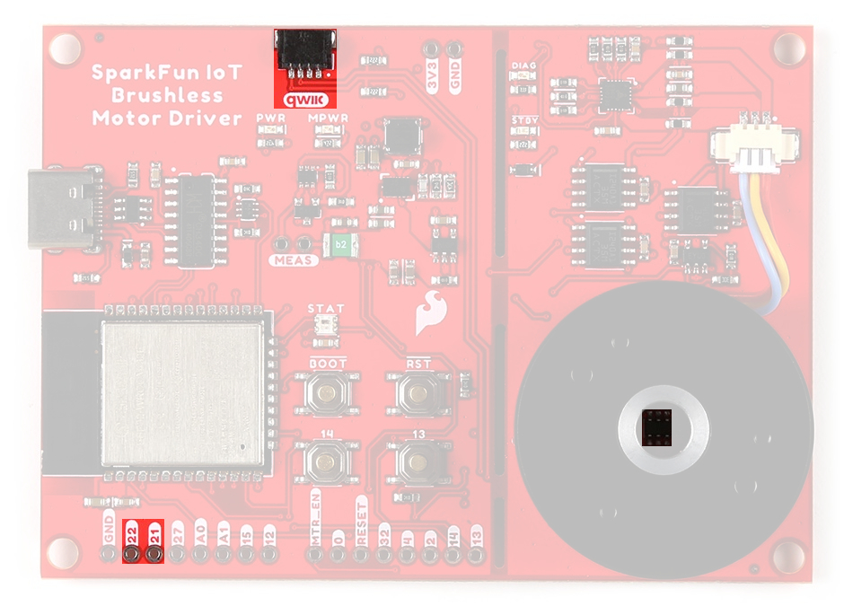
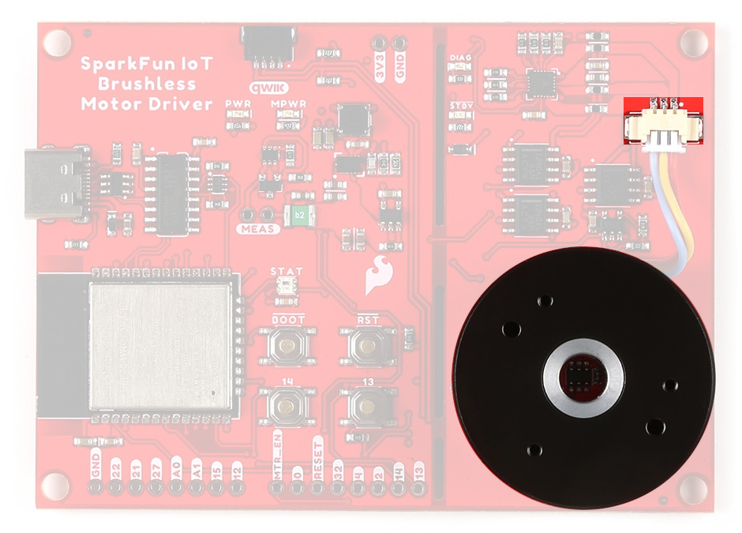

For more information about the board's dimensions, users can download the eagle files for the board. These files can be opened in Eagle and additional measurements can be made with the dimensions tool.
Eagle - Free Download!
Eagle is a CAD program for electronics that is free to use for hobbyists and students. However, it does require an account registration to utilize the software.
This video from Autodesk demonstrates how to utilize the dimensions tool in Eagle, to include additional measurements:
USB-C Connector
The USB connector is provided to power and program the board. For most users, it will be the primary programming interface for the ESP32 module on the IoT Motor Driver board.
The IoT Motor Driver only requires 5V to power all of the board's components. The simplest method to power the board is through the USB-C connector. Alternatively, the 3V3 pin can be used to supply power to any of the components, except the motor driver.
3V3_A - Provides a regulated 3.3V from the USB (5V) power to only the TMC6300 motor driver.
The motor driver will not function without power from the USB connector.
The 3.3VAP63357 LDO regulator can source up to 3.5A.
VUSB - The voltage from the USB-C connector, usually 5V.
Power source for the entire board.
Powers the two 3.3V voltage regulators (AP2112 and AP63357).
Features reverse current protection and a thermal fuse.
MEAS - These pins can be used to measure the current being drawn through the USB connector (see the Jumpers section).
GND - The common ground or the 0V reference for the voltage supplies.
Qwiic Connector - Provides a regulated 3.3V voltage to the Qwiic devices.
Info
For more details, users can reference the schematic and the datasheets of the individual components on the board.
Motor Voltage
The Gimbal Stabilizer Motor has an operating voltage range of 6 - 8V. However, we have found that it still functions properly with only 3.3V provided by the IoT Motor Driver board.
CH340 Serial-to-UART
The CH340 allows the ESP32-WROOM to communicate with a computer/host device through the board's USB-C connection. This allows the board to show up as a device on the serial (or COM) port of the computer. Users will need to install the latest drivers for the computer to recognize the board (see Software Overview section).
Microcontroller - ESP32-WROOM
The brains of the IoT Motor Driver, is an ESP32-WROOM module with 16MB of flash memory. Espressif's ESP32-WROOM module is a versatile, WiFi+BT+BLE MCU module that targets a wide variety of applications. At the core of this module is the ESP32-D0WDQ6 system on a chip (SoC) which is designed to be both scalable and adaptive microcontroller. Its laundry list of features include:
Features:
Xtensa® Dual-Core 32-bit LX6 Microprocessor (up to 240MHz)
448KB ROM and 520KB SRAM
16MB of Embedded SPI Flash Storage
Cryptographic Hardware Accelerators
AES, SHA2, ECC, RSA-4096
Integrated 802.11 b/g/n WiFi 2.4GHz Transceiver (up to 150Mbps)
Integrated dual-mode Bluetooth (Bluetooth v4.2 and BLE)
Users should be aware of the following nuances and details of this board
The ESP32-WROOM is only compatible with 2.4GHz WiFi networks; it will not work on the 5GHz bands.
For details on the boot mode configuration, please refer to section 3.3 Strapping Pins of the ESP32-WROOM module datasheet.
Info
The ESP32-WROOM module has various power modes:
Active - The chip radio is powered on. The chip can receive, transmit, or listen.
Modem Sleep - The CPU is operational and the clock is configurable. The Wi-Fi/Bluetooth
baseband and radio are disabled.
Light Sleep - The CPU is paused. The RTC memory and RTC peripherals, as well as the ULP
coprocessor are running.
Deep Sleep - Only the RTC memory and RTC peripherals are powered on. The ULP coprocessor is functional.
Hibernation - Only one RTC timer on the slow clock and certain RTC GPIOs are
active.
Off - Chip is powered off
For more information on the power management of the ESP32-WROOM module, pleaser refer to Section 3.7 and Tables: 8 and 17 of the ESP32 SoC Datasheet.
Debugging
For users interested in debugging their code, the JTAG pins are broken out on the board. However, the debugging feature is only available through the ESP-IDF.
The JTAG pins of the ESP32-WROOM module on the IoT Motor Driver.
Firmware Download Mode
Users can manually force the board into the serial bootloader with the BOOT button. Please, refer to the Boot Button section below for more information.
Peripherals and I/O
Warning
Users should be aware of the following nuances of this board
⚡ All the GPIO on the IoT Motor Driver are 3.3V pins.
The I/O pins are not 5V-tolerant! To interface with higher voltage components, a logic level adapter is recommended.
⚡ There are electrical limitations to the amount of current that the ESP32-WROOM module can sink or source. For more details, check out the ESP32-WROOM module datasheet.
The ESP32-WROOM module has 26 multifunctional GPIO, of which, 16 I/O pins are used to interface with motor driver, sensors, and status LED on the board. Additionally, 13 I/O pins are broken out to PTH pins and the users buttons. All of the IoT Motor Driver pins have a .1" pitch spacing for headers.
While all of the GPIO pins are capable of functioning as digital I/O pins, various pins can have additional capabilities with the pin multiplexing feature of the ESP32 SoC. For more technical specifications on the I/O pins, please refer to the ESP32 SoC datasheet.
13x 12-bit analog to digital converter (ADC) channels
3x UARTs (only two are configured by default in the Arduino IDE, one UART is used for bootloading/debug)
3x SPI (only one is configured by default in the Arduino IDE)
2x I2C (only one is configured by default in the Arduino IDE)
2x I2S Audio
2x digital-to-analog converter (DAC) channels
16x 20-bit PWM outputs
8x Capacitive Touch Inputs
Info
Users should be aware of the following limitations for the board in the Arduino IDE.
Not all of the features, listed above, are available in the Arduino IDE. For the full capabilities of the ESP32, the Espressif IDF should be utilized.
Only one I2C bus is defined.
Only two UART interfaces are available.
UART (USB):Serial
RX/TX Pins:Serial1
Only one SPI bus is defined.
Peripheral Devices
This development board features several components operating together to create an IoT device. Their connections are shown in the diagram below and their operations are listed in the boxes below. For more details on each component, please refer to the sections below.
Any GPIO pin on the ESP32-WROOM module can function as a digital I/O (input or output). However, users will need to declare the pinMode()(link) in the setup of their sketch (programs written in the Arduino IDE) to configure a pin as an input or an output.
Inputs
When configured properly, an input pin will be looking for a HIGH or LOW state. Input pins are High Impedance and takes very little current to move the input pin from one state to another.
DIAG(TMC6300)
GPIO 34
INT(TMAG5273)
GPIO 04
Button 13
GPIO 13
Button 14
GPIO 14
Outputs
When configured as an output the pin will be at a HIGH or LOW voltage. Output pins are Low Impedance: This means that they can provide a relatively substantial amount of current to other circuits.
VIO(TMC6300)
GPIO 05
WS2812
GPIO 02
Warning
⚡ There are electrical limitations to the amount of current that the ESP32-WROOM module can sink or source. For more details, check out the ESP32-WROOM module datasheet.
Tip
Pins cannot be configured to operate simultaneously as an input and output, without implementing the pin as an interrupt.
The ESP32-WROOM module provides a 12-bit ADC input on thirteen of its I/O pins. This functionality is accessed in the Arduino IDE using the analogRead(pin) function. (The available ADC pins are highlighted in the image below.)
Current Sensor
INA240 (U)
INA240 (V)
INA240 (W)
MCP6021
Analog Input
GPIO 35
GPIO 36
GPIO 39
GPIO 32
Info
By default, in the Arduino IDE, analogRead() returns a 10-bit value. To change the resolution of the value returned by the analogRead() function, use the analogReadResolution(bits) function.
Tip
To learn more about analog vs. digital signals, check out this great tutorial.
Analog vs. Digital
The ESP32-WROOM module supports up to sixteen channels of 20-bit PWM (Pulse Width Modulation) outputs on any of its I/O pins. This is accessed in the Arduino IDE using the analogWrite(pin, value) function. (Any I/O pin can be used for the PWM outputs; the available DAC pins, with true analog outputs, are highlighted in the image below.)
By default, in the Arduino IDE, analogWrite() accepts an 8-bit value. To change the resolution of the PWM signal for the analogWrite() function, use the analogWriteResolution(bits) function. (The PWM output is not a true analog signal.)
Tip
To learn more about pulse width modulation (PWM), check out this great tutorial.
Pulse Width Modulation
The ESP32-WROOM module provides three UART ports. By default, the UART port for the USB connection (Serial) and the labeled UART I/O pins on the board (Serial1) can be accessed through the Arduino IDE using the serial communication class.
Info
By default, in the Arduino IDE, the board definition supports:
Serial - UART (USB)
Serial1 - Pins: RX/TX (GPIO 16/GPIO 17)
Note
The GPIO 16 and GPIO 17 pins of Serial1 are already dedicated to the UH/UL half-bridge on the TMC63000 motor driver and are not broken out for users to access.
In order to utilize the serial communication on the strapping pins, users will need to create a custom serial port object and declare which pins to access.
Tip
To learn more about serial communication, check out this great tutorial.
Serial Communication
Tip
We have noticed that with the ESP32 Arduino core, Serial.available() does not operate instantaneously. This is due to an interrupt triggered by the UART, to empty the FIFO when the RX pin is inactive for two byte periods:
At 9600 baud, hwAvailable takes [number of bytes received + 2] x 1 ms = 11 ms before the UART indicates that data was received from: \r\nERROR\r\n.
At 115200 baud, hwAvailable takes [number of bytes received + 2] x .087 ms = ~1 ms before the UART indicates that data was received from: \r\nERROR\r\n.
The ESP32-WROOM module provides three SPI buses. By default, in the Arduino IDE, the SPI class is configured to utilize pins GPIO 18(SCK), GPIO 19(POCI), GPIO 23(PICO). In order to utilize the other SPI ports or objects, users will need to create a custom SPI object and declare which pins to access.
The GPIO 18,GPIO 19, and GPIO 23 pins of the SPI bus are already dedicated to the VH/WH/VL MOSFETs on the TMC63000 motor driver and are not broken out for users to access.
The CS pin associated with GPIO 05 is also already dedicated to the STBY pin of the TMC63000 motor driver and is not broken out for users to access.
Tip
To learn more about the serial peripheral interface (SPI) protocol, check out this great tutorial.
Serial Peripheral Interface (SPI)
The ESP32-WROOM module module can support up to two I2C buses. By default, in the Arduino IDE, the Wire class is configured to utilize pins GPIO 21(SDA) and GPIO 22(SCL). These pins share the same I2C bus with the Qwiic connector and TMAG5273 hall-effect sensor. In order to utilize the other I2C ports, users will need to create a custom Wire object and declare which pins to access.
I2C Pins
SCL
GPIO 22
SDA
GPIO 21
TMAG5273 I2C Address:
0x35 (Default) (7-bit)
0x6A (write)/0x6B (read)
Default I2C bus connections for the IoT Motor Driver.
Tip
To learn more about the inter-integrated circuit (I2C) protocol, check out this great tutorial.
Inter-Integrated Circuit (I2C)
Motor Driver - TMC6300
The TMC6300 from Trinamic Motion Control, part of Analog Devices, is a low voltage, 3-Phase BLDC/PMSM motor driver utilizing separate high-side and low-side control signals for its three half-bridges.
The electronic commutation sequence for these MOSFETs will depend on the motor that is connected. For most cases, users will provide a PWM signal to each of these pins. These are active-high pins.
ESP32-WROOM
16
17
18
23
19
33
Motor Driver
UH
UL
VH
VL
WH
WL
Active High
By pulling the pin high, the MOSFET will enable power to flow through that section of the half-bridge.
With the electronic commutation sequence provided to the half-bridges, the output motor phases will drive a connected motor.

The three motor phase outputs (U/V/W) from the TMC6300 are used to drive the gimbal motor, attached through the JST connector.
Motor Commutation
The TMC6300 relies on an electrical commutation sequence/signal to drive the motor phases to a BLDC or PMSM motor. The commutation signals for these motors are trapezoidal for BLDC motors and sinusoidal for PMSM motors.
Based on measuring the output from one of the coils, our gimbal motor is a PMSM and would require a sinusoidal waveform to drive the motor. It should be noted that a trapezodial waveform can probably be used; however, users may notice effects such as cogging.
For a trapezoidal signal, the high-side (HS) and low-side (LS) MOSFETs, can just be driven high or low. However, in order to approximate a sinusoidal signal, a progressively varying PWM signal must be provided with all six signals in sync with each other.
VIO/Standby Pin
In it's default configuration, the VIO pin is used to enable the motor driver and set the logic level voltage of the TMC6300 inputs. However, the VIO pin also operates as a standby pin when it is pulled LOW. In standby, the TMC6300 resets and sits in standby mode.
Users can control the VIO pin with GPIO 05 on the ESP32-WROOM module, to reset the TMC6300 or put it in standby mode.
Diagnostic Pin
The diagnostic pin is triggered based on different faults (i.e. shorts and overtemperature) detected by the IC. By default, the status will be indicated by the, green diagnostic, DIAG LED and will remail LOW until triggered. Once triggered, users will need to disable and reset the TMC6300 or power cycle the board.
Users can monitor the diagnostic pin with GPIO 34 on the ESP32-WROOM module, to determine if the TMC6300 need to be reset to clear a fault.
Current Sense Pin
The current sense pin is the foot point of the U and V half-bridges, with a 0.12Ω resistor attached. Users can measure the voltage across the resistor to determine the current flowing to the motor (see the Low-side Op Amp - MCP6021 section below).
The interrupt pin of the TMAG5723 can be configured in different modes to utilize either the INT or SCL pins.
No interrupt
Interrupt through INT
Interrupt through INT except when I2C busy
Interrupt through SCL
Interrupt through SCL except when I2C busy
Tip
We recommend utilizing the default INT pin to trigger interrupts; as it is already connected to GPIO 04 of the ESP32-WROOM module.
Bus Contention
Texas Instruments does not recommend sharing the I2C bus with multiple devices when using the SCL pin for the interrupt function. The SCL interrupt can potentially corrupt the transactions with other devices, when present on the same I2C bus.
Note
The TMAG5273 is programmed to detect a magnetic threshold in wake-up or sleep mode. Once the magnetic threshold cross is detected, the device asserts a latched interrupt signal through the INT pin, and goes back to stand-by mode. The interrupt latch is cleared through the SCL pin.
Current Sensors
There are two different types of Op Amps on the board to amplify the input voltage for the current measurements.
The INA240 is used for the in-line current measurements between the TMC6300 and the gimabal motor.
The MCP6021 is used on the low-side current measurement of the TMC63000's half-bridges.
The status indicator LEDs on the TMC6300 motor driver.
WS2812 RGB LED
The WS2812 RGB LED is controlled with a 24-bit (GRB) data signal. This indicator is connected to GPIO 02 and the digital output pin from the LED is available through a test point. For more information, please refer to the WS2812C datasheet.
The status indicator LED (STAT)on the IoT Motor Driver.
Info
The latest ESP32 Arduino core, now provides a basic RGB LED driver for a WS2812 (or NeoPixel) LED populated the board. For an example of how to utilize the RGB LED driver check out the BlinkRGB example code, which can be accessed from the File drop down menu (i.e File > Examples > ESP32 > GPIO > BlinkRGB).
Buttons
There are four buttons on IoT Motor Driver: RST, BOOT, 13, and 14 buttons.
The BOOT button can be used to force the board into the serial bootloader. Holding down the BOOT button, while connecting the board to a computer through its USB-C connector or resetting the board will cause it to enter the Firmware Download mode. The board will remain in this mode until it power cycles (happens automatically after uploading new firmware) or the RST button is pressed.
Hold the BOOT button down.
Reset the MCU.
While unpowered, connect the board to a computer with through the USB-C connection.
The Qwiic connector and hall-effect sensor are attached to the primary I2C bus. The primary I2C bus for this board utilizes the pin connections, detailed in the table below:
I2C bus connections on the IoT Motor Driver.
Connection
VDD
GND
SCL
SDA
Hall-Effect Sensor (TMAG5273)
3V3
GND
GPIO 22
GPIO 21
Qwiic Connector
3V3
GND
GPIO 22
GPIO 21
Qwiic Connector
A Qwiic connector is provided for users to seamlessly integrate with SparkFun's Qwiic Ecosystem. Otherwise, users can connect their I2C devices through the PTH pins broken out on the board.
Qwiic connector and I2C pins on the IoT Motor Driver.
What is Qwiic?
The Qwiic connect system is a solderless, polarized connection system that allows users to seamlessly daisy chain I2C boards together. Play the video below to learn more about the Qwiic connect system or click on the banner above to learn more about Qwiic products.
Features of the Qwiic System
Qwiic cables (4-pin JST) plug easily from development boards to sensors, shields, accessory boards and more, making easy work of setting up a new prototype.
There's no need to worry about accidentally swapping the SDA and SCL wires on your breadboard. The Qwiic connector is polarized so you know you’ll have it wired correctly every time, right from the start.
The PCB connector is part number SM04B-SRSS (Datasheet) or equivalent. The mating connector used on cables is part number SHR04V-S-B or an equivalent (1mm pitch, 4-pin JST connector).
It’s time to leverage the power of the I2C bus! Most Qwiic boards will have two or more connectors on them, allowing multiple devices to be connected.
 Dimensions Tool
Dimensions Tool


{kind=link}
{kind=link}
{kind=link}
{kind=link}
{kind=link}
{kind=link}
{kind=link}

{kind=link}


{kind=link}
{kind=link}
{kind=link}

{kind=link}

{kind=link}
{kind=link}
{kind=link}
{kind=link}
{kind=link}
{kind=link}
{kind=link}
{kind=link}
{kind=link}
{kind=link}

{kind=link}
{kind=link}